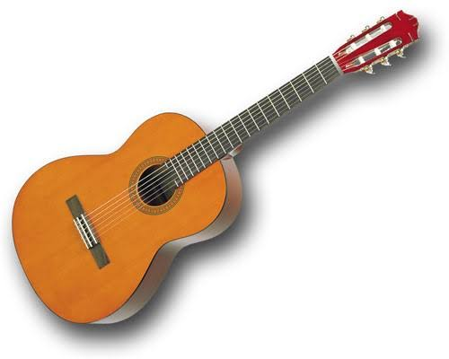
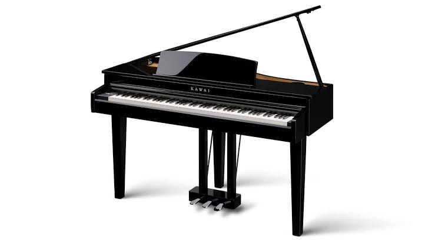
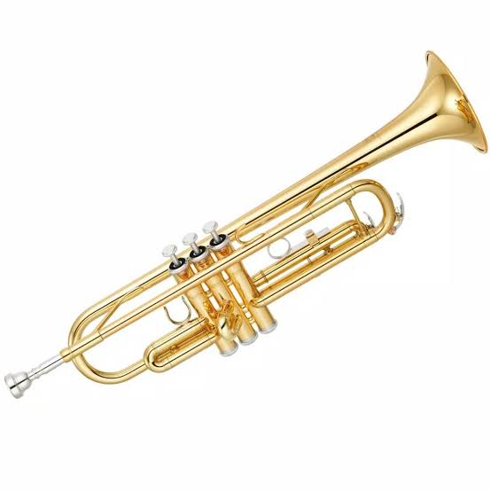
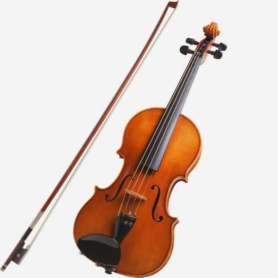

Assalamualaikum warahmatullahi wabarakatuh,nama saya Eryan Gusman kelas XI RPL 2,saya akan menjelaskan tentang beberapa pengertian alat musik.
saya akan menjelaskan pengertian 4 alat musik yaitu Gitar,Piano, Terompet,dan Biola.

Alat Musik Gitar
Gitar merupakan sebuah alat musik berdawai yang dapat dimainkan dengan cara dipetik menggunakan dua cara, yaitu memetiknya menggunakan jari serta plektrum. Gitar sendiri terbentuk dari adanya sebuah bagian tubuh pokok serta bagian leher padat yang berfungsi sebagai tempat senar.
Senar yang ada pada alat musik gitar sendiri pada umumnya berjumlah enam yang saling berdempetan. Gitar pada umumnya dibuat dari berbagai jenis kayu serta senar yang terbuat dari bahan nilon maupun baja. Namun, pada gitar modern bahan dasar atau material yang digunakan juga terdapat polikarbonat.
Alat Musik Piano
Piano (yang juga disebut pianoforte) adalah alat musik tuts
yang diklasifikasikan sebagai instrumen dawai dan perkusi yang dimainkan dengan menekan tuts-tuts pada papan piano.
Setiap tuts tersambung ke palu yang ada di dalam piano dan menekan senar di dalamnya, sehingga menghasilkan bunyi.Jumlah tuts pada piano adalah 88 buah, dengan rincian 36 tuts hitam dan 52 tuts putih. Ketika tuts piano ditekan, tuas akan mendorong palu kayu yang terdapat di dalam piano untuk memukul senar dari bawah.

Alat Musik Terompet
Terompet adalah alat musik tiup logam. Terletak pada jajaran tertinggi di antara tuba, eufonium, trombon, sousafon, French horn, dan Bariton. Terompet di-pitch di B♭.Terompet hanya memiliki tiga tombol, dan pemain trompet harus menyesuaikan embouchure untuk mendapatkan nada yang berbeda.
Alat Musik Biola
Biola adalah suatu alat musik yang digesek dan memiliki empat senar yang berdawai dimana nada yang paling rendah berada pada nada G dan nada tertinggin pada viola dan cello. Dalam alat musik biola, orang yang ahli yang memainkan biola disebut pemain biola (dalam bahasa Indonesia) atau violinis (dalam bahasa inggris).